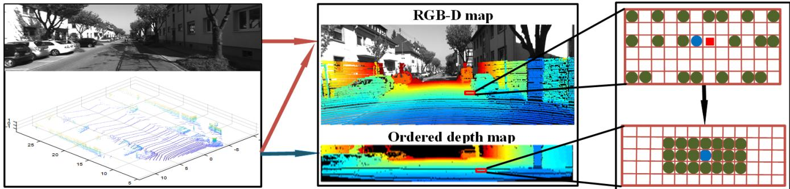
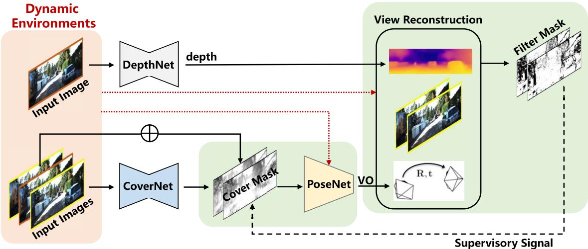
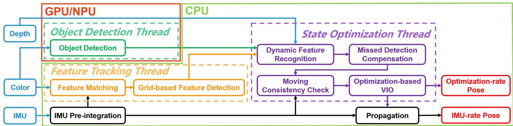

阶段 C · 视觉主干 / Lesson 0072
三条务实路线：激光辅助与受限平台
不追新范式，拿手边的东西把 SLAM 跑起来 🔧
🎯 主题：多传感器 / 无监督 / 受限平台三条工程路线
👥 作者：LAMV-SLAM（Feng 等）/ Hybrid Masks（Chen 等）/ Dynamic-VINS（Liu 等）
📅 2022 · LAMV-SLAM （IEEE TIM，推断）/ Hybrid Masks （IEEE 期刊，推断）/ Dynamic-VINS （IEEE RA-L/IROS，推断）
本节目标 读完你应该能说清三条「不够漂亮但很管用」的路线各付了什么代价：多加一种传感器（激光）、换个监督方式（无监督掩码）、把算法砍到能在受限平台上实时跑。
和前面课程怎么接 第二季 0035 Voxblox 讲机载算力约束（Intel i7 单线程、ESDF 4 Hz、250 ms 预算）→ 本節路线三是同一约束的「视觉侧」版本；第一季 0009 DARPA 地下挑战赛讲真实环境失败 → 三条路线正是对那类失败的现实回答；第二季 0022 讲 NEES 一致性 → 受限平台没余量做复杂估计。
1. 三条务实路线：不够漂亮但很管用
前面本季大多在讲「更优雅的范式」——特征法、直接法、学习式稠密、神经隐式。这最后一节换个口味：真实世界的系统往往不是靠新范式，而是靠「把问题绕过或压小」做出来。 三篇论文的共同点是——它们都不追求刷新论文指标，而是回答「在真实约束下怎么把 SLAM 跑起来」。
路线一：多一种传感器 LAMV-SLAM：单目视觉为主，稀疏激光只补尺度与深度。代价 ：离不开激光。
路线二：换一种监督 Hybrid Masks：无监督掩码自己学出动态物体。代价 ：要调权重、迁移性有限。
路线三：砍到能跑 Dynamic-VINS：受限平台上的实时 RGB-D 惯性里程计。代价 ：只能处理已知动态类、简化了模型。
下面对应接上前面的课：0035 的 Voxblox 在无人机上只有 Intel i7 2.1 GHz、单线程、ESDF 只能 4 Hz、每帧 250 ms 预算——那是「算力受限」的激光侧；本节路线三是在视觉侧 面对同一类约束。0009 的 DARPA 地下挑战赛里，真实环境的光照、动态、退化让很多优雅方法当场翻车；这三条路线就是对被那种失败「补洞」。0022 讲 NEES 一致性检验需要足够估计余量，而受限平台上根本没余量做复杂估计——路线三正是「余量为零」下的取舍。
2. 路线一：加一种传感器（LAMV-SLAM）
LAMV-SLAM（A Novel Lidar-Assisted Monocular Visual SLAM Framework for Mobile Robots in Outdoor Environments ）的思路是：单目视觉是主体，3-D 激光是辅助 。它要解决的是单目 VSLAM 在室外大尺度下的两个老毛病——尺度不可观（不知道远近距离的绝对值）、光照剧变/光流过大时容易失效。
作者原话点得很清楚：激光点云「only provide real-scale depth estimates for visual features」（只为视觉特征提供真实尺度深度）。所以它是半直接（semidirect） 的 SLAM，不是纯直接、也不是纯间接；并且明确是「激光辅助视觉」，和第一季 0006 激光雷达里程计综述里「激光当主角」的紧耦合 SLAM 是主/辅反向 的关系——那里激光是主角，这里激光是配角。
系统叫 LAMV-SLAM，有四个并行线程：光度标定（橙）、跟踪（蓝）、建图（绿）、回环（红）。硬件上用的是 OUSTER OS1-32（32 线激光）+ Point Grey Chameleon3 单目相机 + XSENS mti-30 IMU + NPOS320 GNSS/INS，在室外大尺度跑。

原图注（Fig. 3）： 左块是原图与激光扫描；中块是 RGB-D 图与有序深度图（有序深度图的高=激光环数，宽=每环激光点数）；右块中红框是图像特征，圆点是投影到图像的激光点（蓝圈=离该特征最近的激光邻点）。怎么看这张图： ① 左图看到激光扫描（散点）叠在照片上；② 中图把激光点按「环数×每环点数」重排成一张有序深度图；③ 右图标出「图像特征」旁边最近的激光点——这正是「稀疏激光怎么补到图像特征上」的核心。注意原文未给具体激光点数，仅给出硬件为 32 线激光。
3. 激光怎么给单目补尺度：深度融合 + 两阶段
它有两个独特招式，都是「用稀疏激光把单目的不确定钉死」：
深度融合（Depth Fusion）： 把激光点投影到图像上建出 RGB-D 图，再按「激光环数 × 每环点数」重排成有序深度图；对每个视觉特征，先在 RGB-D 图找最近邻，再在有序图邻域取若干邻点，用 PCA 拟合一个小平面，与相机视线求交得到深度。复杂度与激光点数无关。两阶段运动估计： Stage I 用直接法对齐（含由上一帧激光生成的临时地图点 TMPC），给出带真实尺度的初值；Stage II 只用这些带真实尺度的临时点做间接几何精修。因为用的都是「带尺度」的点，尺度漂移被显著抑制。在线光度标定： 建模渐晕、曝光、响应函数，用 FEW（固定雅可比）+ 边缘化窗口优化，让直接法在强度突变时更稳（关掉后强度突变时 >70% 特征会丢失）。
实验数字：在 KITTI 里程计 11 个序列上，开回环平均平移漂移 0.81% （关回环 0.87%），优于 DEMO 1.16%、DVL-SLAM 0.98% 等；旋转误差 0.0028°/m；速度 32.73 Hz （Intel i7-8700 3.20 GHz / 16G），比对照方法（i7-2600 仅 5 Hz）快很多。逐线程耗时（Table V）：光度 16.1 ms、跟踪 29 ms（其中深度融合 0.26 / TMPC 3.22 / 两阶段 5.03 / 局部 BA 18.28）、建图 9 ms、回环 18 ms。原文也诚实承认：当前不处理动态物体，未来要加语义模块 。
稀疏激光点打在图像上
左：街景 + 稀疏激光点（彩色圆）
激光直接给出这些点的距离
纯视觉：只知方向
不知远近，要很久才估出深度
「深度？」
激光辅助：一点就给
真实距离（如 3.2 m）直接拿到
稀疏激光点投影到图像上：纯视觉要很久才估出的深度，激光一点就给了
这张图在画什么： 左图是一个具象的室外街景（楼、路、车），上面撒了稀疏的彩色圆点，代表把激光点投影到图像后的位置；原文 Fig.3 就是这种「原图 + 激光扫描」的叠加。右上是「纯视觉」——单目相机只知射线方向、不知远近；右下是「激光辅助」——同样的位置激光直接给出真实距离。怎么看这张图： ① 彩色圆点是空间中被激光直接测距的稀疏位置；② 纯视觉情况下这些点的距离要靠多帧几何慢慢「 triangulate（三角化）」出来，慢且易漂；③ 激光一点就给真实尺度，等于把单目的「无限远猜测」钉成实测值。要记住的一句话： 激光在这里不是主角，只是给视觉特征「贴刻度」的配角。
4. 路线二：换一种监督（Hybrid Masks）
Hybrid Masks（Unsupervised Estimation of Monocular Depth and VO in Dynamic Environments via Hybrid Masks ）走的是「无监督」路线。它联合训练单目深度和视觉里程计（VO），但不靠语义分割标签 ，而是从重投影残差 / 光度一致性 自己学出「哪些是动态物体」的掩码。
它想解决两个痛点：无监督单目框架在动态环境会失败；而且因为训练样本是短片段、各片段尺度不同，会导致全局尺度不一致 。前人的掩码往往只救「视角重建」，忽略了动态对 VO（位姿估计）本身的破坏。
本文提 hybrid masks（混合掩码） ，由两块组成：
Filter Mask $M_f$： 逐像素比较「光度一致性损失」和全图均值，若某像素的 $L_{pc} > \beta\cdot\bar{L}_{pc}$（$\beta=1.5$）就判为离群，令 $M_f=0$（二值）。它既当重建损失的像素权重，又去监督下面的 CoverNet。Cover Mask $M_c$： 一个 CoverNet（U-Net）以「目标帧—源帧」对为输入，输出连续的 $[0,1]$ 掩码，把动态区覆盖（$I'=M_c\cdot I$）后再送进 PoseNet；用 BCE 损失对照 $M_f$ 来训练。
一句话：它靠「预测光流 / 重投影对不上」来判定动态，不需要任何语义标签 。

原图注（Fig. 3）： 框架示意。混合掩码由 filter mask $M_f$ 与 cover mask $M_c$ 组成（图中高亮）。整个流程含三个子网：DepthNet、PoseNet、CoverNet。DepthNet 吃单张图输出深度图；CoverNet 吃目标—源帧对估计 cover mask。怎么看这张图： ① DepthNet 出深度、PoseNet 出位姿、CoverNet 出覆盖掩码，三者共享编码器；② 红/高亮处就是混合掩码的作用位置——$M_c$ 在进 PoseNet 前盖住动态区，$M_f$ 在重建损失里滤掉离群。盯着这两个掩码「一个救 VO、一个救重建」的分工。
5. 混合掩码与全局尺度一致
联合训练里总损失是：$L_{total}=\sum(L_{pc}+\lambda_m L_m+\lambda_d L_{dpc}+\lambda_{sm} L_{sm})$。其中光度损失 $L_{pc}$ 用 SSIM + L1 加最小重投影和自掩码；平滑损失 $L_{sm}$ 保边缘。关键在于它引入的深度—位姿一致性 ：
意思是：相邻三帧的相对位姿应当可逆一致——「前→中」乘「中→后」必须等于「前→后」。这像两段尺子拼起来必须等于整段，强迫各训练片段的尺度彼此对齐 ，从而消除跨片段的全局尺度不一致。
实验：在 KITTI Eigen 上深度达到 SOTA 级别；VO 在 Seq09 为 $t_{err}=7.14\%,\,r_{err}=2.32°/m$，Seq10 为 $7.72\%/2.27°/m$，优于 ORB-SLAM（15.30/3.68）、SfM-Learner、GeoNet 等，甚至超过立体方法 Zhan ；在 Make3D 上迁移 Abs Rel 0.334，无监督中领先。平台是 RTX 8000，约 25 小时 / 20 epoch。原文承认的局限：Make3D 域偏移仍大；未用 IMU / 时序 RNN。和路线三（几何+检测）、路线一（语义+NeRF）对照，它这条是「无监督学习」支线。
互动判断 Hybrid Masks 是怎么发现「动态物体」的？
靠重投影残差学
靠语义分割标签
6. 路线三：把算法压到能跑（Dynamic-VINS）
Dynamic-VINS（RGB-D Inertial Odometry for a Resource-Restricted Robot in Dynamic Environments ）面向算力受限机器人 + 动态环境 的实时 RGB-D 惯性里程计。它的逻辑是：现有动态 SLAM 多靠语义分割，算力大、难实时；受限平台（SWaP，尺寸/重量/功耗受限）跑不稳。于是它用轻量网格 FAST 检测 + IMU 预测光流 降负担，再用目标检测（YOLOv3）+ 深度 做高效的「类语义」动态特征识别——性能媲美语义分割但更省。
三个并行线程：目标检测线程、特征跟踪线程、状态优化线程。动态特征在「优化线程」被剔除。平台是 HUAWEI Atlas200 DK（8 核 A55 1.6 GHz / 8G / 2 核 NPU）和 NVIDIA Jetson AGX Xavier（8 核 ARM 2.25 GHz / 16G / 512 核 Volta）；检测跑在 NPU / GPU 上，不占 CPU。传感器是 RealSense D455（RGB-D，30 Hz 彩色 + 对齐深度）+ ADIS16470 IMU（200 Hz）。

原图注（Fig. 1）： Dynamic-VINS 框架。关键模块用不同颜色的虚线框高亮。三个主线程并行运行：特征跟踪线程里跟踪并检测特征；目标检测线程每帧实时检测动态物体；状态优化线程汇总特征信息与目标信息。怎么看这张图： ① 三个并排的线程框是「检测 / 跟踪 / 优化」；② 检测线程输出的动态 mask 会流进优化线程，把动态特征剔除；③ 底层是 VINS-Mono 式的滑窗因子图（IMU 预积分 + 视觉重投影）。盯着那条「动态 mask → 优化」的链路，它就是实时性的关键。
7. 紧耦合方式、动态处理与耗时数字
RGB-D + IMU 是紧耦合还是松耦合？ 原文的根据是：系统基于 VINS-Mono 与 VINS-RGBD，继承了它们的滑窗因子图（IMU 预积分 + 视觉重投影）作为紧耦合 VIO 后端 ；而 RGB-D 的深度只用于动态特征识别，不参与位姿因子图 。所以准确说法是：紧耦合的 VIO + 用深度做动态掩码 ——深度是「前端判别动态的工具」，不是「后端位姿约束」。
动态怎么处理： YOLOv3 检人/车 → 用边界框四角的深度求「最大背景深度 $d_{\max}$」，再与中心深度定阈值 $\bar{d}$，特征深度 $< \bar{d}$ 就判为动态；类语义 mask 比「直接删整框」能保住更多静态约束。漏检时按像素速度预测框运动来补偿；运动一致性检查（MCC）用 IMU 预测位姿 + 滑窗重投影残差 $r_k$ 抓「未知运动物体」。
本节最有价值的就是耗时数字 （Table III，OpenLORIS market 数据集）。下面这张「预算条」用的就是原文给出的各线程单帧平均耗时——注意这些是真实表格数字，不是我编的 ；且线程并行，单帧总延迟不等于各线程耗时之和（检测还在 NPU 上与优化并行，不占主线程）。
各线程单帧平均耗时（Atlas200 DK, OpenLORIS market, Table III）
Opt Thread
82.49 ms
State Opt
74.95 ms
Tracking
19.90 ms
Obj Detect
17.59 ms
Feat Detect
1.76 ms
Dyn Feat Recog
1.34 ms
线程并行：检测跑 NPU 不占 CPU；单帧总延迟 ≠ 各线程耗时之和（原文仅给各模块均值，Table III）
这张图在画什么： 把 Dynamic-VINS 在 Atlas200 DK 上各线程的单帧平均耗时画成横条（数据来自原文 Table III，非编造）。红色两块（Opt Thread 82.49 ms、State Opt 74.95 ms）是主线程大头，蓝/绿是轻量模块。怎么看这张图： ① 状态优化占主导，所以实时性的瓶颈在优化线程；② 特征检测因「网格 + 线程池」仅约 1 ms，极省；③ 目标检测 17.59 ms 但跑在 NPU 上与优化并行，不进主线程延迟。要记住的一句话： 这些是实数，但线程并行意味着「总延迟 ≈ 最慢那条线程」，不是把六个数加起来；Jetson AGX Xavier 上对应为 47.54 / 43.04 / 5.54 / 21.92 / 0.94 / 0.47 ms。
实验：在 OpenLORIS-Scene 上鲁棒性最佳；TUM fr3_walking 的 ATE 为 0.0486 / 0.0077 / 0.0629 / 0.0608（四个子序列，米），而 ORB-SLAM2 为 0.75 / 0.39 / 0.87 / 0.49、DS-SLAM 为 0.0247 / 0.0081 / 0.4442 / 0.0303。局限：依赖目标检测（只认已知动态类），未知运动靠 MCC 但召回/误删有折中；室外深度相机受阳光/距离限制时 mask 会变大。
互动判断 Dynamic-VINS 里 RGB-D 的深度信息，进入了位姿因子图吗？
只用于动态识别
参与位姿因子图
8. 三条路线的共同点：在真实约束下把 SLAM 跑起来
把三条路放回一起看，它们回答的是同一个问题——「在真实约束下怎么把 SLAM 跑起来」，而不是「怎么把论文指标刷高」 。具体手法分别是：
多一种传感器 激光补尺度的代价：系统离不开激光，且依赖外参标定与足够密的激光环。
换一种监督 无监督掩码的代价：要调多任务权重，迁移性/域偏移仍有限，没用 IMU。
砍到能跑 受限平台的代价：只能处理已知动态类，模型被简化，室外深度受限时 mask 变大。
它们都不是「新范式」，而是用现成零件把问题绕过或压小 ：LAMV 用激光绕过尺度不可观，Hybrid Masks 用无监督绕过动态标签，Dynamic-VINS 用轻量模块把算力压进受限平台。这也正好呼应本节开头接的课：0035 的机载算力约束在视觉侧由路线三兑现，0009 的真实失败由三条路共同补洞，0022 的一致性检验提醒我们——受限平台上没有余量做复杂估计，所以只能「砍」。
9. 第三季收尾：阶段 C 视觉主干到此结束
从本季开头的「特征法 vs 直接法」来回摆动（偿还第一季 0011 的悬念④），到 RGB-D 稠密、学习式稠密、VIO 主干，再到动态环境的三条务实路线与通往阶段 F 的神经隐式桥——阶段 C（视觉主干）就讲到这里 。你现在已经握有「视觉侧」从经典到前沿的大部分武器：知道什么时候该用特征、什么时候该用直接法、动态怎么治、算力不够怎么砍。
下一步进入阶段 D（激光主干） ：把第一季 0005/0006/0007/0008 埋下的激光 SLAM 线索正式展开——特征法/直接法激光、固态雷达、退化与横评，以及 ikd-Tree 等高效结构（第一季未还的悬念③）。视觉与激光两条主干汇合，才是完整 SLAM 版图。
课后练习
LAMV-SLAM 是「视觉为主」还是「激光为主」？请用原文原话支持你的判断。
展开查看答案 是「视觉为主、激光为辅」。原文原话：激光点云「only provide real-scale depth estimates for visual features」，即激光只给视觉特征提供真实尺度深度；系统是半直接的，激光是配角（与 0006 激光当主角的紧耦合 SLAM 是主/辅反向）。注意原文未给具体激光点数，仅给出硬件为 32 线 OS1-32。
LAMV-SLAM 的「两阶段运动估计」为什么能抑制尺度漂移？
展开查看答案 Stage I 直接法对齐时用「上一帧激光生成的临时地图点 TMPC」（都带激光真实深度）给带尺度的初值；Stage II 只精修这些带真实尺度的临时点，避免用会累积误差的老地图点，从而把尺度漂移压住（KITTI 每秒尺度比≈1）。
Hybrid Masks 的 Filter Mask $M_f$ 判定动态的依据是什么？它和语义分割的根本区别在哪？
展开查看答案 依据是逐像素光度一致性损失：若 $L_{pc} > \beta\cdot\bar{L}_{pc}$（$\beta=1.5$）就判离群、$M_f=0$。根本区别是它不依赖任何语义标签，而是从「重投影/光流对不上」的无监督残差里学出动态，而语义分割需要人标好「人/车」等类别。
Dynamic-VINS 的 RGB-D 深度参与了位姿估计吗？它和 VINS-Mono 是什么关系？
展开查看答案 深度不参与位姿因子图，只用于「动态特征识别」（用深度门槛判断特征是否在动态物体上）。它继承 VINS-Mono / VINS-RGBD 的滑窗因子图（IMU 预积分 + 视觉重投影）作为紧耦合 VIO 后端，所以叫「紧耦合 VIO + 深度做动态掩码」。
为什么说 Dynamic-VINS 的「单帧总延迟」不能把 Table III 里六个线程耗时直接相加？
展开查看答案 因为三个线程（检测/跟踪/优化）并行运行，且目标检测跑在 NPU/GPU 上、与 CPU 上的优化并行，不占主线程延迟。所以总延迟约等于「最慢那条线程」（约 82.49 ms 的 Opt Thread），而不是 19.90+1.76+1.34+74.95+82.49+17.59 的求和。原文也只给了各模块均值，未给单帧总延迟。